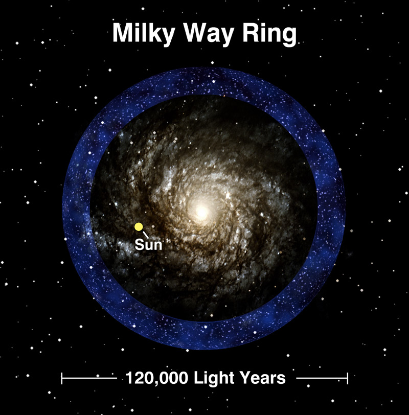

| Gary S. Ruderman | Dr. Richard Kron |
Public Information Officer | Scientific Spokesman |
Sloan Digital Sky Survey | Sloan Digital Sky Survey |
Phone: (312) 320-4794 | (773)-702-3335 |
sdsspio@aol.com | rich@oddjob.uchicago.edu |
DISTANT RING OF STARS FOUND CIRCLING THE MILKY WAY
SEATTLE - 6 January, 2003 -- A team of scientists from the Sloan Digital Sky Survey has discovered a previously unseen band of stars beyond the edge of the Milky Way Galaxy.
|  |
This ring around the Milky Way Galaxy discovered by the Sloan Digital Sky Survey may be what's left of a collision between our Galaxy and a smaller, dwarf galaxy that occurred billions of years ago. It's an indication that at least part of our galaxy was formed by a lot
of smaller or dwarf galaxies mixing together, explained investigators Heidi Jo Newberg of Rensselaer Polytechnic Institute and Brian Yanny of the Fermi National Accelerator Laboratory's Experimental Astrophysics Group.
CREDIT: Rensselaer Polytechnic Institute and the Sloan Digital Sky Survey (www.sdss.org)
|
Hidden from view because it is behind the stars and gas on the same visual plane as the Milky Way, this ring around the Milky Way could help to explain how the Galaxy was assembled 10 billion years ago. The ring of stars is probably the largest of a series of similar
structures being found around the Galaxy. Investigators believe that as smaller galaxies are pulled apart, the remnants dissolve into streams of stars around larger galaxies.
" When we find large groups of stars formed into rings it's an indication that at least part of our galaxy was formed by a lot of smaller or dwarf galaxies mixing together," explained Heidi Jo Newberg, associate professor of physics and astronomy at Rensselaer
Polytechnic Institute.
Brian Yanny, a scientist at the Fermi National Accelerator Laboratory's Experimental Astrophysics Group, thinks "this ring of stars may be what's left of a collision between our Milky Way and a smaller, dwarf galaxy that occurred billions of years ago." Gravity,
primarily from unseen dark matter, holds the ring in a nearly circular orbit around the Milky Way.
"What's new is the position of the star belt on the outskirts of the Milky Way, an ideal position to study the distribution and amount of dark and light mass within the band," Yanny added.
Co-lead investigators Newberg and Yanny presented their findings today (6 January, 2003) at the American Astronomical Society meeting in Seattle.
Evidence of this new unexpected band of stars hidden by the Milky Way comes from multi-color photo imagery of hundreds of square degrees of sky and hundreds of spectroscopic exposures from the Sloan Digital Sky Survey, the largest international collaborative
astronomical survey ever undertaken.
For four years Newberg, Yanny and a collaboration of Sloan Digital Sky Survey scientists have been examining the distribution of stars in the Milky Way. At the outer edge of the Galaxy in the direction of the constellation Monoceros (the Unicorn) they found tens of
thousands of stars that were not expected given standard Galaxy models. Three-dimensional mapping from the Sloan Digital Sky Survey revealed the excess stars were actually parts of a separate structure outside of the Milky Way. "This ring-like structure is around
120,000 light years across," Newberg said.
"The large area covered by The Sloan Survey and the accuracy of the multi-color observations has allowed us to revisit some classic questions, questions from 50 to 100 years ago," Yanny explained. "What does our Milky Way looks like 'as a whole?' How did it form?
Did it form in one 'whoosh,' or was it built up slowly via mergers of collapsing dwarf galaxies? And how does the mysterious dark (invisible) matter affect the distribution of stars?"
Questions like that and more may be answered as the Sloan Digital Sky Survey continues to catalog the universe back to the beginning of time.
The Milky Way Halo finding were made possible by Sloan Digital Sky Survey collaborators from Apache Point Observatory in New Mexico, the University of Chicago, The Max-Planck-Institute for in Heidelberg, Germany, Princeton University, the University of
Washington and Pennsylvania State University.
Collaborators on the DISTANT RING OF STARS FOUND CIRCLING THE MILKY WAY were: Brian Yanny, Fermi National Accelerator Laboratory, Batavia, IL yanny@fnal.gov; Heidi Jo Newberg, Dept. of Physics, Applied Physics and Astronomy,
Rensselaer Polytechnic Institute Troy, NY, heidi@rpi.edu; Steve Kent, Fermi National Accelerator Lab skent@fnal.gov; Eva K. Grebel, Max Planck Institute for Astronomy, KonigStuhl 17, D-69117, Heidelberg, Germany grebel@mpia.de ; Michael Odenkirchen, Max
Planck Institute odenk@mpia.de; Connie M. Rockosi, University of Washington, Seattle, WA cmr@astro.washington.edu.; David Schlegel, Princeton University, Princeton, NJ schlegel@astro.princeton.edu; Mark Subbarao, University of Chicago
subbarao@oddjob.uchicago.edu; Donald P. Schneider, Pennsylvania State University, State College, PA. dps@astro.psu.edu; Zeljko Ivezic, Princeton University, ivezic@astro.princeton.edu; Jon Brinkmann, Apache Point Observatory, 2001 Apache Point Road,
Sunspot, NM jb@apo.nmsu.edu. Don Q. Lamb, University of Chicago, d-lamb@uchicago.edu
ABOUT THE SLOAN DIGITAL SKY SURVEY (SDSS)
The Sloan Digital Sky Survey (www.sdss.org) will map in detail one-quarter of the entire sky, determining the positions and absolute brightness of 100 million celestial objects. It will also measure the distances to more than a million galaxies and quasars. The
Astrophysical Research Consortium (ARC) operates Apache Point Observatory, site of the SDSS telescopes.
SDSS is a joint project of The University of Chicago, Fermilab, the Institute for Advanced Study, the Japan Participation Group, The Johns Hopkins University, the Los Alamos National Laboratory, the Max-Planck-Institute for Astronomy (MPIA), the
Max-Planck-Institute for Astrophysics (MPA), New Mexico State University, University of Pittsburgh, Princeton University, the United States Naval Observatory, and the University of Washington.
Funding for the project has been provided by the Alfred P. Sloan Foundation, the Participating Institutions, the National Aeronautics and Space Administration, the National Science Foundation, the U.S. Department of Energy, the Japanese Monbukagakusho, and the
Max Planck Society.